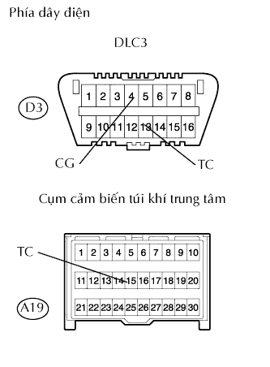

HỆ THỐNG TÚI KHÍ > Mạch Cực TC Và CG |
| 1.KIỂM TRA DÂY ĐIỆN (DLC3 - CẢM BIẾN TÚI KHÍ TRUNG TÂM VÀ MÁT THÂN XE) |
|  |
Tháo giắc A19 của ECU.
Đo điện trở của các giắc nối phía dây điện.
| Nối dụng cụ đo | Điều kiện tiêu chuẩn |
| D3-13 (TC) - A19-15 (TC) | Dưới 1 Ω |
| D3-4 (CG) - Mát thân xe | Dưới 1 Ω |
| A19-15 (TC) - Mát thân xe | 1 MΩ trở lên |
|
| ||||
| OK | ||
| ||